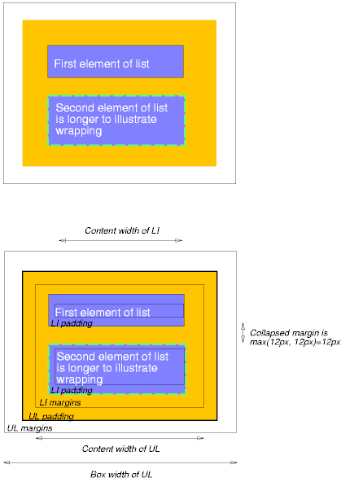

Содержание
Модель бокса CSS описывает прямоугольный бокс, который генерируется для элементов дерева документа и располагается в соответствии с моделью визуального форматирования. Страничный бокс это особый вид бокса, детально описанный в разделе страничный носитель.
Каждый бокс имеет область содержимого (например, текст, изображение и т.п.) и необязательное окружение - области заполнения, рамки и поля; размер каждой области специфицируется свойствами, определёнными ниже. На диаграмме показано соотношение этих областей и терминология, используемая для ссылок на разные участки поля/margin, рамки/border и заполнения/padding:
Поле, рамка и заполнение могут быть разорваны в левом, правом, верхнем или нижнем сегментах (например, на диаграмме, "LM" в левом поле, "RP" в правом заполнении, "TB" в верху рамки и т.д.).
Периметр каждой из четырёх областей (содержимого, заполнения, рамки и поля) называется "край", соответственно - каждый бокс имеет четыре края:
Каждый край может быть разорван слева, справа, вверху и внизу.
Размеры области содержимого бокса - ширина содержимого и высота содержимого - зависят от нескольких факторов: имеет ли элемент, генерирующий бокс, установленные свойства 'width' или 'height', содержит ли бокс текст или другие боксы, является ли бокс таблицей и т.д. Ширина и высота бокса обсуждаются в главе некоторые детали модели визуального форматирования.
Ширина бокса выводится как сумма левого и правого поля, рамки, заполнения и ширины содержимого. Высота выводится как сумма верхнего и нижнего поля, рамки, заполнения и высоты содержимого.
Стиль фона различных областей бокса определяется так:
<!DOCTYPE HTML PUBLIC "-//W3C//DTD HTML 4.0//EN">
<HTML>
<HEAD>
<TITLE>Пример полей, заполнения и рамок</TITLE>
<STYLE type="text/css">
UL {
background: green;
margin: 12px 12px 12px 12px;
padding: 3px 3px 3px 3px;
/* Рамки не установлены */
}
LI {
color: black; /* цвет текста - чёрный */
background: gray; /* Содержимое, заполнение будет серым */
margin: 12px 12px 12px 12px;
padding: 12px 0px 12px 12px; /* Заметьте, что заполнение справа 0px */
list-style: none /* перед элементом списка нет никаких глифов */
/* Рамки не установлены */
}
LI.withborder {
border-style: dashed;
border-width: medium; /* устанавливает ширину рамок всех сторон */
border-color: black;
}
</STYLE>
</HEAD>
<BODY>
<UL>
<LI>Первый элемент списка
<LI class="withborder">Второй элемент списка длиннее,
чтобы показать перенос.
</UL>
</BODY>
</HTML>
и даёт дерево документа с (помимо других соотношений) элементом UL, в котором есть два дочерних LI.
Первая
диаграмма иллюстрирует, что этот пример
даст в результате.
Вторая иллюстрирует взаимоотношения между
полями, рамками и заполнением элементов UL и LI.
 [D]
Обратите внимание, что:
Свойства поля специфицируют область полей бокса. Сокращённое свойство 'margin' устанавливает поле для всех четырёх сторон, в то время как другие свойства устанавливают только соответствующие стороны.
Свойства, определённые в этом разделе, относятся к типу значений <margin-width>, который может устанавливаться в:
Негативные значения свойств полей допускаются, но могут существовать ограничения, специфичные для конкретных реализаций.
| Значение: | <margin-width> | inherit |
| Начальное: | 0 |
| Применяется: | ко всем элементам |
| Наследуется: | нет |
| Процентное: | относительно ширины содержащего блока |
| Носитель: | визуальный |
Это свойство устанавливает верхнее, нижнее, правое и левое поля бокса.
H1 { margin-top: 2em }
| Значение: | <margin-width>{1,4} | inherit |
| Начальное: | не определено для сокращённого свойства |
| Применяется: | ко всем элементам |
| Наследуется: | нет |
| Процентное: | относительно ширины содержащего блока |
| Носитель: | визуальный |
'margin' - это сокращённое свойство для установки значений 'margin-top', 'margin-right', 'margin-bottom' и 'margin-left' в одном месте в таблице стилей.
Если имеется одно значение, то оно применяется ко всем сторонам. Если дано два значения, верхнее и нижнее поля устанавливаются в первое, а правое и левое поля - во второе значение. Если дано три значения, верхнее поле устанавливается в первое, левое и правое - во второе, а нижнее поле - в третье значение. Если задано четыре значения, они применяются к верхнему, правому, нижнему и левому полям соответственно.
BODY { margin: 2em } /* все поля установлены в 2em */
BODY { margin: 1em 2em } /* верхнее и нижнее = 1em, правое и левое = 2em */
BODY { margin: 1em 2em 3em } /* верхнее=1em, правое=2em, нижнее=3em, левое=2em */
Последнее правило эквивалентно следующему:
BODY {
margin-top: 1em;
margin-right: 2em;
margin-bottom: 3em;
margin-left: 2em; /* копируется из противоположной стороны (из правой) */
}
В этой спецификации выражение сжатие полей означает, что смежные поля (не разделённые заполнением и рамками) двух или более боксов (которые могут быть последовательными или вложенными) образуют единое поле.
В CSS2 вертикальные поля никогда не сжимаются.
Горизонтальные поля могут сжиматься между определёнными боксами:
См. иллюстрацию сжимаемых полей в примере полей, заполнения и рамок.
Свойства обтекания специфицируют ширину области заполнения бокса. Сокращённое свойство 'padding' устанавливает заполнение для всех четырёх сторон, а другие свойства заполнения устанавливают соответствующие стороны.
Свойства, определённые в этом разделе, относятся к типу значений <padding-width>, который может устанавливаться в:
В отличие от свойств полей, значения заполнения не могут быть негативными. Как и в свойствах полей, процентные значения свойств заполнения относятся к ширине бокса, сгенерированного содержащим блоком.
| Значение: | <padding-width> | inherit |
| Начальное: | 0 |
| Применяется: | ко всем элементам |
| Наследуется: | нет |
| Процентное: | относительно ширины содержащего блока |
| Носитель: | визуальный |
Эти свойства устанавливают верхнее, правое, нижнее и левое заполнение для бокса.
BLOCKQUOTE { padding-top: 0.3em }
| Значение: | <padding-width>{1,4} | inherit |
| Начальное: | не определено для сокращённого свойства |
| Применяется: | ко всем элементам |
| Наследуется: | нет |
| Процентное: | относительно ширины содержащего блока |
| Носитель: | визуальный |
Свойство 'padding' - это сокращённое свойство для установки 'padding-top', 'padding-right', 'padding-bottom' и 'padding-left' в одном месте в таблице стилей.
Если имеется одно значение, то оно применяется ко всем сторонам. Если дано два значения, верхнее и нижнее заполнение устанавливаются в первое, а правое и левое заполнения - во второе значение. Если дано три значения, верхнее заполнение устанавливается в первое, левое и правое - во второе, а нижнее заполнение - в третье значение. Если задано четыре значения, они применяются к верхнему, правому, нижнему и левому заполнениям соответственно.
Цвет поверхности области заполнения
специфицируется через свойство 'background':
H1 {
background: white;
padding: 1em 2em;
}
Вышеприведённый пример специфицирует вертикальное заполнение '1em' ('padding-top' и 'padding-bottom') и горизонтальное заполнение '2em' ('padding-right' и 'padding-left'). Единицы измерения 'em' относительны к размеру шрифта элемента: '1em' эквивалентно размеру используемого шрифта.
Свойства рамки специфицируют ширину, цвет и стиль области рамки бокса. Эти свойства применимы ко всем элементам.
Примечание. Особенно в HTML, ПА могут отображать рамки определённых элементов (например, кнопок, меню и т.п.) иначе, чем у "обычных" элементов.
Свойства ширины рамки специфицируют ширину области рамки. Свойства, определённые в этом разделе, относятся к типу значений <border-width>, который может устанавливаться в:
Интерпретация первых трёх значений зависит от ПА. Следующие соотношения, однако, обязаны выдерживаться:
'thin' <='medium' <= 'thick'.
К тому же эти значения ширины обязаны быть константными в пределах документа.
| Значение: | <border-width> | inherit |
| Начальное: | medium |
| Применяется: | ко всем элементам |
| Наследуется: | нет |
| Процентное: | N/A |
| Носитель: | визуальный |
Эти свойства устанавливают верхнюю, правую, нижнюю и левую линии рамки для бокса.
| Значение: | <border-width>{1,4} | inherit |
| Начальное: | см. индивидуальные свойства |
| Применяется: | ко всем элементам |
| Наследуется: | нет |
| Процентное: | N/A |
| Носитель: | визуальный |
Это сокращённое свойство для установки 'border-top-width', 'border-right-width', 'border-bottom-width' и 'border-left-width' в одном месте в таблице стилей.
Если имеется одно значение, то оно применяется ко всем сторонам. Если дано два значения, верхняя и нижняя линии рамки устанавливаются в первое, а правая и левая линии рамки - во второе значение. Если дано три значения, верхняя линия рамки устанавливается в первое, левая и правая - во второе, а нижняя линия рамки - в третье значение. Если задано четыре значения, они применяются к верхней, правой, нижней и левой линиям рамки соответственно.
Комментарии в данном примере поясняют результаты установки ширины верхней, правой, нижней и левой линий рамки:
H1 { border-width: thin } /* thin thin thin thin */
H1 { border-width: thin thick } /* thin thick thin thick */
H1 { border-width: thin thick medium } /* thin thick medium thick */
Эти свойства специфицируют цвет рамки бокса.
| Значение: | <color> | inherit |
| Начальное: | значение свойства 'color' |
| Применяется: | ко всем элементам |
| Наследуется: | нет |
| Процентное: | N/A |
| Носитель: | визуальный |
| Значение: | <color>{1,4} | transparent | inherit |
| Начальное: | см. индивидуальные свойства |
| Применяется: | ко всем элементам |
| Наследуется: | нет |
| Процентное: | N/A |
| Носитель: | визуальный |
Свойство 'border-color'
устанавливает цвет рамки с четырёх сторон.
Значения имеют следующий смысл:
Свойство 'border-color' может иметь от одного до четырёх значений, и эти значения устанавливаются для четырёх сторон так же, как и в 'border-width'.
Если цвет рамки элемента не специфицирован в свойстве рамки, ПА обязаны использовать значение свойства 'color' элемента как вычисленное значение цвета рамки.
В этом примере рамка будет сплошной и чёрной:
P {
color: black;
background: white;
border: solid;
}
Свойства стиля рамки специфицируют стиль линии рамки бокса (solid, double, dashed и т.д.). Свойства, определённые в этом разделе, относятся к типу значений <border-style>, который может устанавливаться в:
Все рамки прорисовываются на поверхности фона бокса. Цвет рамок со значениями 'groove', 'ridge', 'inset' и 'outset' зависит от свойства 'color' элемента.
Соответствующие пользовательские агенты (ПА) HTML могут интерпретировать 'dotted', 'dashed', 'double', 'groove', 'ridge', 'inset' и 'outset' как 'solid'.
| Значение: | <border-style> | inherit |
| Начальное: | none |
| Применяется: | ко всем элементам |
| Наследуется: | нет |
| Процентное: | N/A |
| Носитель: | визуальный |
| Значение: | <border-style>{1,4} | inherit |
| Начальное: | см. индивидуальные свойства |
| Применяется: | ко всем элементам |
| Наследуется: | нет |
| Процентное: | N/A |
| Носитель: | визуальный |
Свойство 'border-style' устанавливает стиль для четырёх сторон рамки. Может иметь от одного до четырёх значений, и значения устанавливаются для разных сторон, как для 'border-width' выше.
#xy34 { border-style: solid dotted }
В этом примере горизонтальные линии рамки будут 'solid', а вертикальные - 'dotted'.
Поскольку начальное значение стиля рамки - 'none', рамка будет видна только после установки значения стиля.
| Значение: | [ <'border-top-width'> || <'border-style'> || <color> ] | inherit |
| Начальное: | см. индивидуальные свойства |
| Применяется: | ко всем элементам |
| Наследуется: | нет |
| Процентное: | N/A |
| Носитель: | визуальный |
Это сокращённое свойство для установки ширины, стиля и цвета верхней, правой, нижней и левой сторон рамки.
H1 { border-bottom: thick solid red }
Это правило устанавливает ширину, стиль и цвет рамки после элемента H1. Опущенные значения установлены в свои начальные значения. Поскольку нижеследующее правило не специфицирует цвет рамки, рамка будет иметь цвет, определённый свойством 'color':
H1 { border-bottom: thick solid }
| Значение: | [ <'border-width'> || <'border-style'> || <color> ] | inherit |
| Начальное: | см. индивидуальные свойства |
| Применяется: | ко всем элементам |
| Наследуется: | нет |
| Процентное: | N/A |
| Носитель: | визуальный |
Свойство 'border' - это сокращённое свойство для установки одинаковых значений ширины, цвета и стиля для всех четырёх сторон рамки бокса. В отличие от сокращённых свойств 'margin' и 'padding', свойство 'border' не может устанавливать разные значения для четырёх сторон. Для этого придётся использовать одно или более других свойств.
Первое правило эквивалентно установке четырёх последующих значений:
P { border: solid red }
P {
border-top: solid red;
border-right: solid red;
border-bottom: solid red;
border-left: solid red
}
Поскольку, в некоторой степени, свойства могут перекрываться, порядок, в котором правила специфицированы, имеет важное значение.
BLOCKQUOTE {
border-color: red;
border-left: double;
color: black
}
В приведённом примере цвет левой линии рамки - чёрный, а других линий - красный. Это потому, что в 'border-left' установлены ширина, стиль и цвет. Поскольку значение цвета в свойстве 'border-left' не установлено, оно будет взято из свойства 'color'. Фактически свойство 'color', установленное после свойства 'border-left', не имеет к этому никакого отношения.